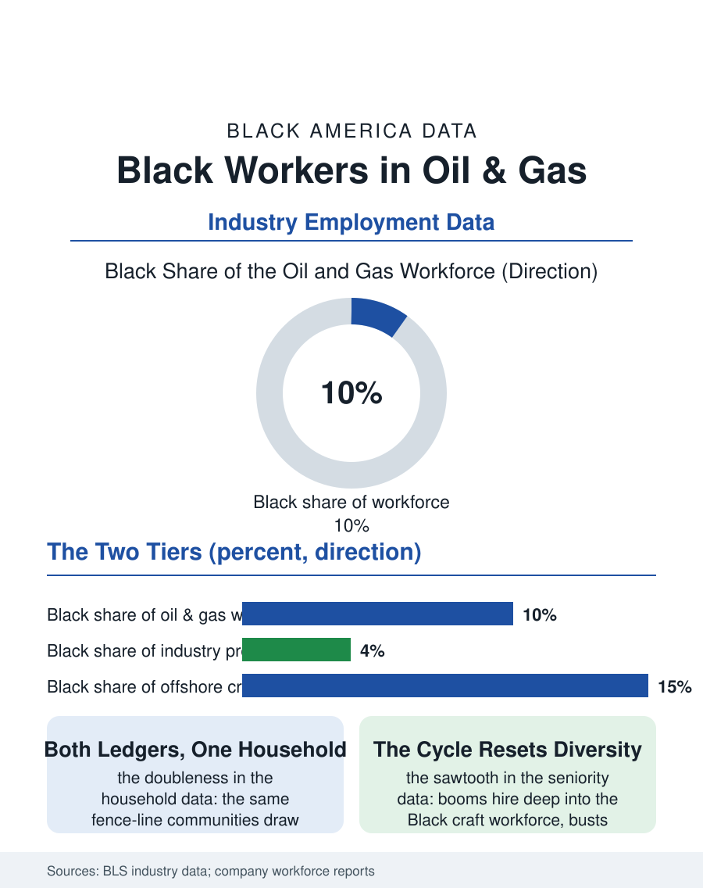

Black Employment
Both Ledgers: Black Workers in Oil and Gas
A tenth of the industry, craft-heavy and office-light, holding both ledgers of the fence-line bargain across three Gulf generations. The oil and gas file.

The oil and gas industry's Black workforce clusters where the industry does: the Gulf Coast's refinery rows and offshore platforms, the Houston energy capital's offices, the Permian and the shale fields' service crews, at roughly a tenth of the industry's employment with the distribution by tier, craft-heavy, office-light, that the energy capital's own diversity reports acknowledge. This article reads the oil and gas file.
Refinery Row and the Craft Tier
The industry's geography is the file's map: the petrochemical corridor from Houston to New Orleans, Cancer Alley's industrial spine, employs Black workers in the plants whose fence lines border the Black communities the environmental files describe, a juxtaposition the workforce data and the exposure data read together, the community's members drawing the industry's paychecks and its emissions in the same households. The craft tier, the operators, the pipefitters, the boilermakers and electricians of the plants' maintenance armies, recruited through the building trades' Gulf locals and the plants' own training pipelines, is the Black workforce's center of gravity, its wages among the highest in the blue-collar data, its pension and benefit structures the industrial pattern. The offshore file is its own world: the Gulf platforms' rotational crews, the helicopter commute, the weeks-on weeks-off schedule that the hours file's distribution cannot represent, historically integrated by the work's isolation and the majors' personnel systems into crews whose Black share has run above the industry's onshore average, a datum the oral histories record with the platform's characteristic mixture of pride and grievance.
The Office and the Boom-Bust Ledger
The professional tier, the geologists, the petroleum engineers, the landmen and the traders of the Houston towers, remains the industry's least integrated in the majors' own published workforce data, the Black share in the low single digits, fed by the petroleum programs of the HBCUs and the Southern universities whose placement into the majors is the pipeline's narrow gate. The boom-bust cycle is the file's economic rhythm and its racial mechanism: the industry's expansions hire deep into the Black craft workforce, its contractions, the price collapses that arrive on the commodity's schedule, lay off in the last-in pattern that resets the seniority ladder's diversity each cycle, so that the industry's Black employment graph is a sawtooth whose recoveries never quite restore the previous peak's composition in the seniority-weighted data. The service companies, the drilling contractors and the frac crews, carry the cycle's violence at the field level, the shale era's West Texas camps a workforce frontier whose Black share the boom's hiring raised and the bust's dispersed. The energy transition writes the file's forward chapter as it did the mining file's: the Gulf workforce's skills map onto the offshore wind and the carbon management industries the same water is slated to host, and the transition programs' reach into the Black craft workforce, the file's open question, will decide whether the next energy economy's founding crews include the last one's.
Energy's Two Ledgers
The oil and gas file closes with the industry's unique doubleness in Black life, which no other employment file quite replicates: the industry is simultaneously one of the best-paying employers of Black craft labor in the South and the author of the fence-line exposures the environmental health data record in the same ZIP codes, and the workforce's own voice in the oral histories holds both ledgers without flinching, the plant job defended as the family's ladder and the plant's flare watched from the porch it paid for. The policy arguments that treat the industry's Black workers as either beneficiaries or victims in the singular fail the file's data, which describe a workforce that priced the bargain with open eyes across three generations, in a region where the alternatives the economy offered were the field and the service counter. The transition's honest design would start from that pricing rather than from the abstractions. The bureau counts the industry's Black workers in the tens of thousands, concentrated in a crescent from the Permian to the bayous. The file's final entry is the crescent's own: the energy that lit the century ran through Black hands at the refinery rail and the platform deck, and the hands are still there, watching the wind turbines arrive in the same Gulf, waiting to see if the new industry's gate is staffed any differently than the old one's was.
More in Black Employment
The Black Unemployment Rate: The Two-to-One Pattern
Black unemployment runs at roughly twice the White rate — 5.5 percent against 3.3 percent in annual averages — a ratio stable across five decades of federal data. How it is measured and why it persists.
Black Median Weekly Earnings: The 80-Cent Ratio
Black full-time workers earn a median of about $900 a week — roughly 80 cents for every dollar White workers earn. The BLS earnings data by group, gender, and occupation.
Black Labor Force Participation: Working at National Rates
Black labor force participation runs at roughly the national rate — and Black women participate at higher rates than White women. The BLS participation data.
Source: Bureau of Labor Statistics industry employment data; major energy companies' published workforce diversity reports.